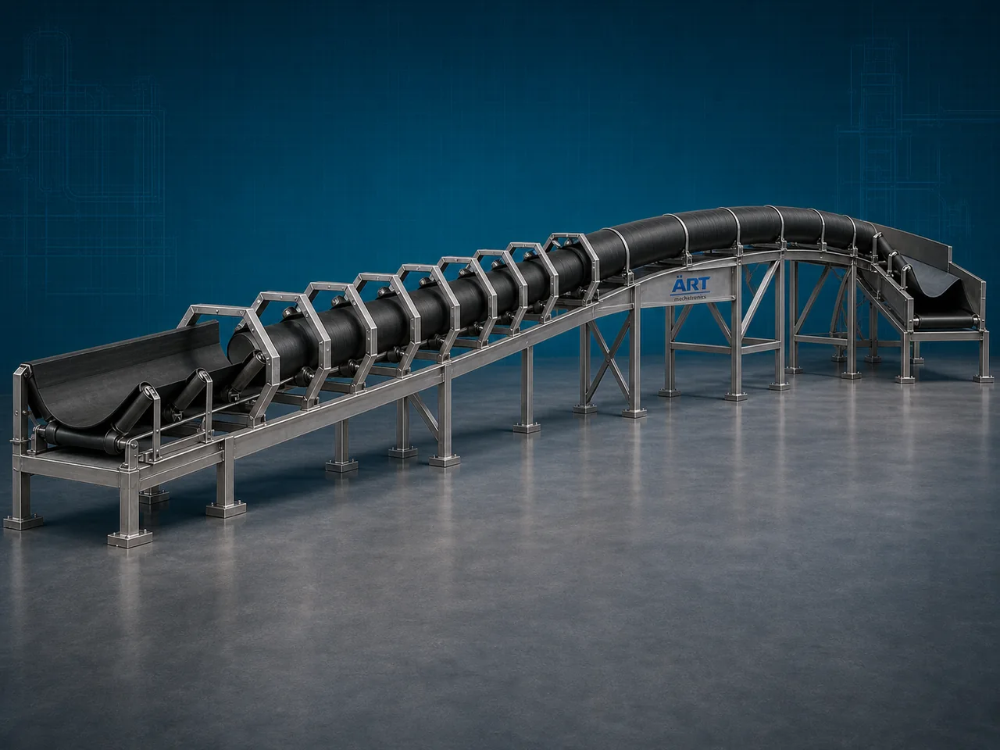

Pipe Conveyor Machine (Industrial Enclosed Pipe Belt Material Handling System)
A Pipe Conveyor Machine, also known as a Pipe Belt Conveyor or Industrial Pipe Conveyor System, is an advanced industrial material handling equipment designed for enclosed transportation of powders, granules, bulk materials, minerals, chemicals, grains, ash, cement, and industrial products through a specially designed belt that forms a closed pipe shape during conveying.

About the Pipe Conveyor
Pipe conveyor systems are widely used for:
- Dust-free bulk material conveying
- Long-distance material transfer
- Environment-friendly conveying
- Curved path material handling
- High-capacity industrial transportation
- Pollution-free conveying systems
The machine improves:
- Material handling efficiency
- Environmental safety
- Dust control
- Product protection
- Production automation
- Space optimization
Unlike conventional conveyors, pipe conveyors use:
- Pipe-shaped enclosed conveyor belts
- Roller support systems
- Motor-driven belt mechanisms
- Sealed conveying paths
to prevent:
- Material spillage
- Dust leakage
- Product contamination
- Environmental pollution
Pipe conveyor machines are widely used in industries such as:
Cement industries
Power plants
Mining industries
Chemical industries
Food processing industries
Fertilizer industries
Port handling facilities
Steel industries
where safe, enclosed, and efficient bulk material conveying is essential.
The machine is highly suitable for:
- Powder conveying
- Fly ash transportation
- Coal handling
- Cement transfer
- Grain conveying
- Chemical material handling
ART Mechatronics offers high-performance pipe conveyor machines, engineered for continuous industrial operation, enclosed dust-free conveying, heavy-duty performance, and reliable long-distance material transfer.
Working Principle of Pipe Conveyor Machine
Bulk materials are fed onto conveyor belt at inlet point
Conveyor belt gradually folds into pipe shape using specially arranged roller stations
Material gets enclosed inside pipe-shaped belt
Machine conveys:
- Powders
- Cement
- Coal
- Fly ash
- Grains
- Chemicals
- Minerals safely without spillage or dust leakage.
Pipe conveyor can operate: Horizontally Inclined Curved routes allowing flexible plant layouts.
Fully enclosed conveying path prevents: Dust emission Product contamination Environmental pollution
At discharge point, belt opens automatically and releases material smoothly
Types of Pipe Conveyor Machines
- 1. Horizontal Pipe Conveyor
Suitable for: ✔ Long-distance horizontal material transfer
- 2. Inclined Pipe Conveyor
Designed for: ✔ Elevated enclosed material conveying
- 3. Curved Pipe Conveyor
Uses: ✔ Flexible curved routing system for complex industrial layouts.
- 4. Heavy Duty Pipe Conveyor
Suitable for: ✔ Mining and cement industries
- 5. Food Grade Pipe Conveyor
Designed for: ✔ Hygienic food and grain conveying applications
- 6. Dust-Free Industrial Pipe Conveyor
Used for: ✔ Pollution-sensitive industrial operations
Industries Using Pipe Conveyor Machine
🏗️ Cement Industry Cement and clinker conveying systems ⚡ Power Plant Industry Fly ash and coal handling systems ⛏️ Mining Industry Mineral and ore transportation systems ⚗️ Chemical Industry Chemical powder conveying systems 🌾 Food Processing Industry Grain and powder handling applications 🌱 Fertilizer Industry Fertilizer granule conveying systems 🚢 Port & Bulk Handling Industry Bulk cargo material transportation systems 🏭 Steel Industry Raw material and dust-free conveying systems
Features & Advantages
- Fully enclosed dust-free material conveying
- Prevents material spillage and contamination
- Environment-friendly conveying solution
- Suitable for long-distance material transportation
- Curved and flexible conveyor routing capability
- Heavy-duty industrial construction
- Continuous industrial operation
- Reduces environmental pollution
- Low maintenance and energy-efficient operation
Technical Highlights
Conveyor Type: Pipe belt conveyor Tubular belt conveyor Curved pipe conveyor Construction: Stainless Steel / Mild Steel Belt Design: Pipe-forming conveyor belt Drive System: Geared motor drive Variable frequency drive (VFD) Conveying Arrangement: Horizontal Inclined Curved transfer Automation: Semi-automatic Fully automatic PLC-based systems
Turnkey Pipe Conveying Solutions
ART Mechatronics offers: Complete pipe conveyor systems Dust-free material handling solutions Long-distance bulk conveying systems Industrial automation integration Installation & commissioning After-sales service & AMC
Why Choose Art Mechatronics
Expertise in industrial bulk material handling systems Customized enclosed conveyor solutions for multiple industries High-performance and durable industrial construction Energy-efficient and reliable conveying systems Proven industrial performance across sectors
Applications
Cement Plants Power Plants Mining Industries Chemical Processing Plants Food Processing Industries Port & Bulk Material Handling Facilities
Related Conveying & Handling machines
Get pricing & specs for the Pipe Conveyor
Share the product, target capacity, current process and plant location. These details help our engineers discuss the right machine or line configuration.
One partner, from design to start-up
ART Mechatronics designs, manufactures, installs and commissions your Pipe Conveyor solution with regional presence in India, UAE and Thailand.